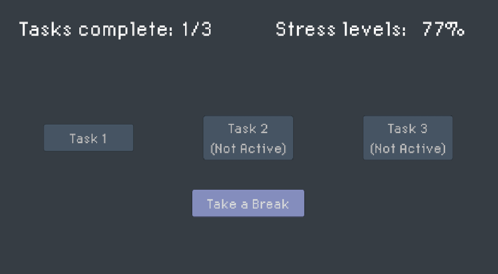
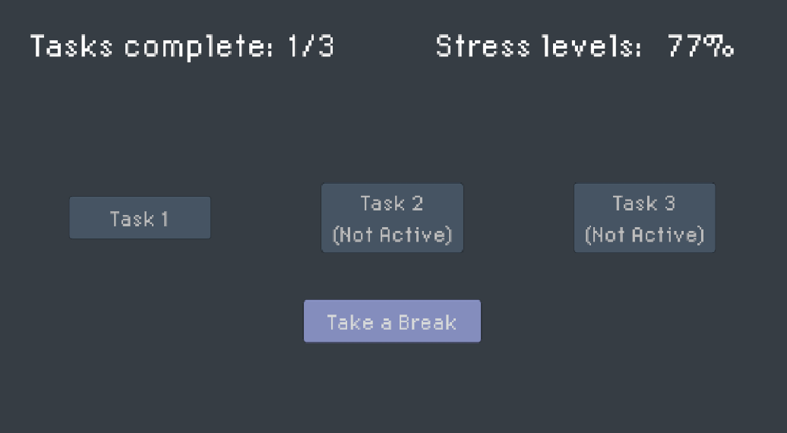
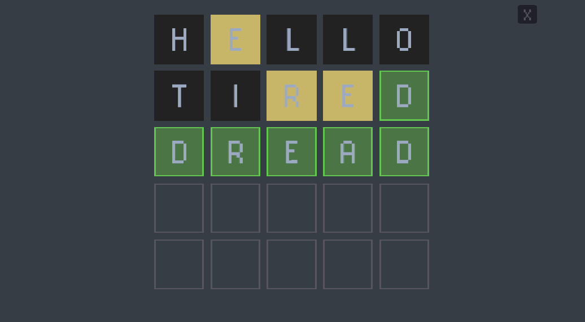
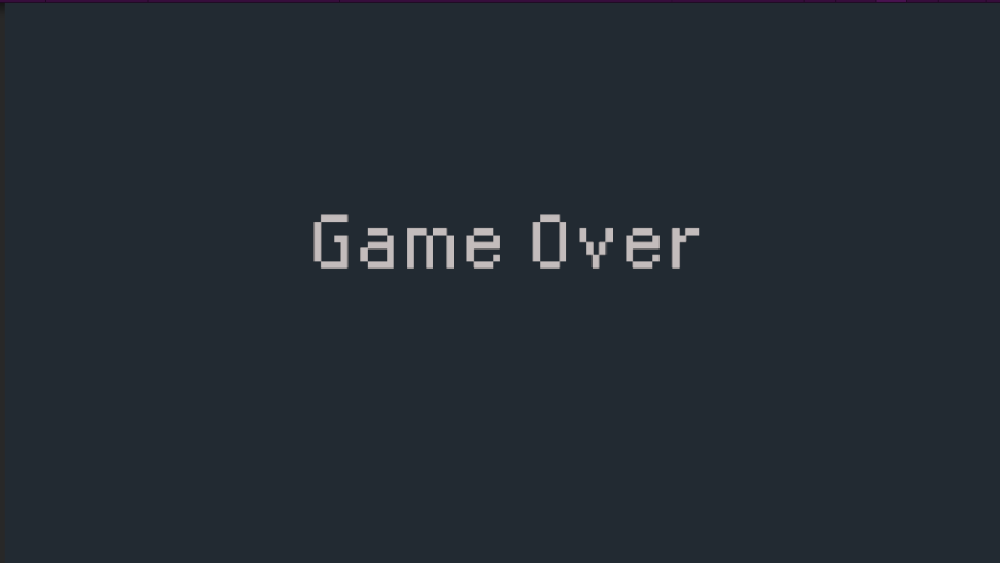

For this prototype, I wanted to conceptualize one of the loops within my game, the one focused on reality and the stress of trying to keep up with all your tasks. My original idea was to have the player bounce between a couple of different minigames while also keeping their eyes on a stress level that steadily increased over time. Due to some struggles with coding, I was only able to get one of the minigames done in time to test, but I figured that the basic structure was in place, so I could still get useful feedback.
 

The main game screen is shown above. The player would click on the task buttons and complete each task(though only one was available at this time). As the stress level increased the player would have to click on the take a break button, closing the screen and returning back to this screen to do so. However, within the playtest most players instead just simply forgot about the stress levels and focus on the minigame, leading to them losing.

This was the minigame screen. Essentially a wordle clone, as I followed a tutorial to get started on a word game style puzzle due to not really knowing how I wanted to structure this game. I put in a word bank with words that felt relevant to the message of the game. I had originally intended to alter it a bit more(I realized halfway through coding this that I probably should have tried to find a more “hangman” style tutorial), but ended up with buggy code and had to revert it back to this state.
Ultimately people seemed most fixated on this part of the game than the stress management, but more so due to frustration than anything else. Some people seemed confused by how to play, and spent a lot of time just blankly staring at the screen. Someone also pointed out that I lacked features that would make the gameplay easier, like a visible list of tried and incorrect words or letters.
Most players would often also forget about the stress element at this point, which answered a design question I had come in with. I had wondered whether not being able to see the stress level on this screen would worry the player as they wouldn’t be able to see the number, kind of equivalent to leaving cookies in the oven without a timer set. But their reaction made me realize that the visual would help serve as a reminder of their overarching goal and probably help the flow of the game.
Some people also pointed out that the language barrier added an extra layer of frustration for them. While frustration was meant to be an important element to the game, I don’t want it to be applied in a way that targets a specific group of people. Yet, people are all built differently with different skills, experiences, and talents. It’s impossible to make everything perfectly equitable because of this, everyone is bound to have a different experience. I guess the question I’m left with is whether or not this inequitable frustration adds or distracts from the game’s message.
A potential solution would be to use numbers instead of letters and have the players guess the code, which is in line with the suggestion for math based minigames given to me when I asked the playtesters for other ideas they thought would suit the game.

This was the game over screen that players were presented with once the stress level reached 100%. Some players were confused by why they had lost, so perhaps it would be helpful to provide some kind of explanation or indicator, maybe even a short animation leading into the game over screen.
All in all, I got some pretty good feedback and have a few ideas on how to improve my idea for future prototypes. Part of me wonders whether I should stick to this system for my next prototype, or if I should try focusing on the more escapist fantasy world side.